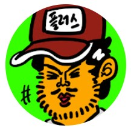

⚝침착맨⚝

대한민국의 전 웹툰 작가
이말년, 유튜버
침착맨
4개의 채널을 운영
중이다. 3개의 채널은 모두 구독자 10만 명은 가뿐히 넘고,
본 채널은 구독자 248만명이다.
토크 위주의 방송을 하며, 게임, 이상형 월드컵, 먹방, 게스트 초대 등 다양한 방송을 진행한다.
팬 커뮤니티인
'침하하'를 운영하고 있다.
📻나는 심심할 때, 밥 먹을 때, 과제 할 때, 쉴 때, 자기 전에
침착맨 영상을 라디오 마냥 틀어놓거나 보곤 한다.
언제부터 봤는지는 기억은 잘 안나지만, 자연스럽게 스며들었다.
그 이후에는 일상이 되어버렸다.. 😅 최근에는 침착맨 갓청자 초대석을 가기도 하였다.
🕶️즐겨보는 영상
나는 침착맨 생방송도 자주
보고, 채널에 올라오는 편집된
영상도 보는 것도 좋아하고,
원본박물관을 통해 호흡이 긴 원본 영상을 보는 것도 좋아한다.
마사토끼의
게임을 하는 침착맨 영상을 좋아한다.🕹️
이는 침착맨 플러스에 업로드되며, 여러 영상이 업로드되어있다.
⬇️이 영상을 진짜 재미있게 봤었다.. 마사토끼와 침착맨의 케미는 짱이다.⬇️
노노그램을 하는 침착맨 영상도 좋아한다.✏️
이것도 침착맨 플러스에 업로드되며, 여러 영상이 업로드되어있다.
⬇️이 영상을 보고 나도 한때 노노그램에 빠졌었다.⬇️
쏘영이와 함께 나온 영상도 좋아한다.🐇
쏘영이는 참 똘똘하고
귀여운 아이같아서 보기만 해도 웃음이 나온다.
요즘은 잘 출연을 하지 않기 때문에 쏘영이 영상은 귀하다..
⬇️이 영상을 보고 나도 한때 노노그램에 빠졌었다.⬇️
침래방도 틀어놓는걸 좋아한다.🎤
약 4-6시간 동안 쉬지않고 노래를
부르며, 특유의 경박하고 구성진 톤으로 노래를 하는
경향이 있다.
딩고의 출연 경력도 있다.
⬇️침래방⬇️
💁♂️이 영상들 이외에 재미있는 영상이 더욱 많으니, 마음에 들었다면 찾아보길 ..
"울지 마세요.
울면 죽여버립니다."
"하고 싶은 일은 죽을 때까지 생각해야 하는 거라고 생각합니다."
"나와의 싸움에서 져요. 반대로면 내가 이긴 거지? 이긴 쪽도 나니까."
"많이 울어. 어른이 되면
속으로 울어야돼. 베이비라는 뜻."
"어렵다는거 다 왔다는 뜻이야.
오히려 좋아"
"이걸로 서운할 사람이면 언젠가 헤어질 사람이에요, 가세요."
"대충 흑백사진에
글쓰면 명언 같다."
"좋은 소식이 있으면 또 나쁜 소식이 오겠죠. 인생사 새옹지마니까요."